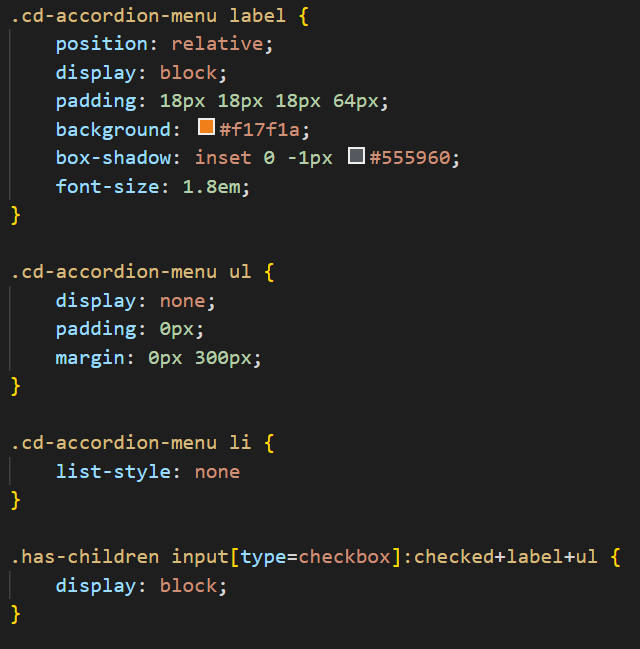
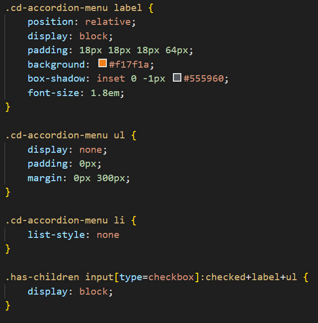
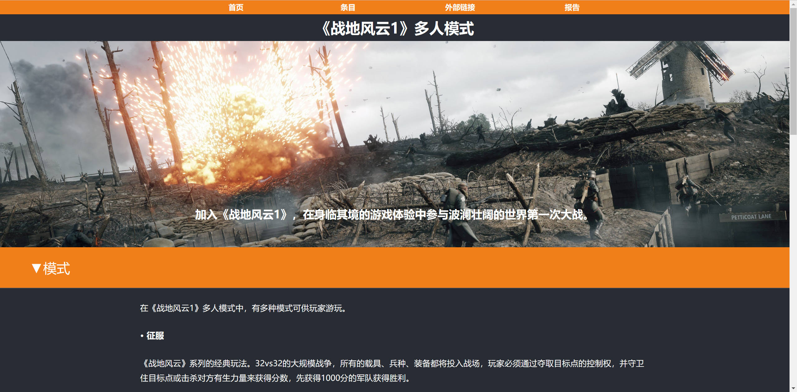
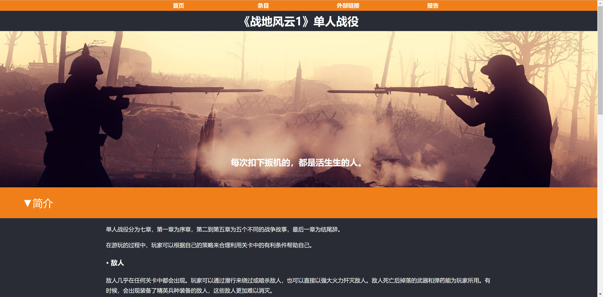
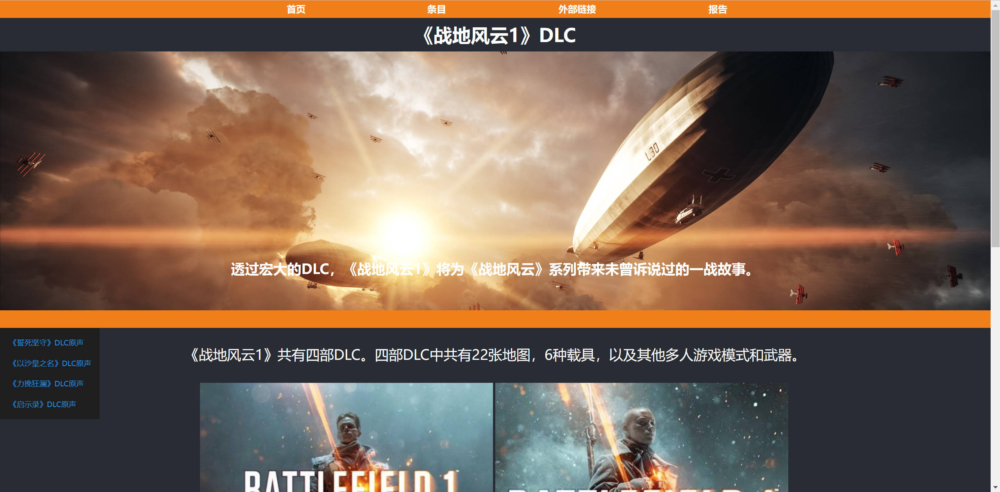

小组成员：姚远 0223749
网站以《战地风云1》为主题，对《战地风云1》做了一个简单的介绍。
顶部有导航栏，并有二级菜单，清除二级菜单的浮动以确保它们在正确的位置上
使用了伪元素与cheakbox控件制作折叠栏来实现文字内容的折叠与展开
 

其他子页面使用了类似的的布局
  子页面条目:DLC加了一个垂直导航栏,并使用表格排列图片
动手做网站应该是最快熟悉HTML和CSS的方式。在完成作业时，通过查询资料，实践，排查错误，我们的能力能得到很大的提高。但是我的能力明显还是不足，很多地方都处理的十分粗糙，下次再有组队任务时我一定要加入一个小队，一起交流、提升